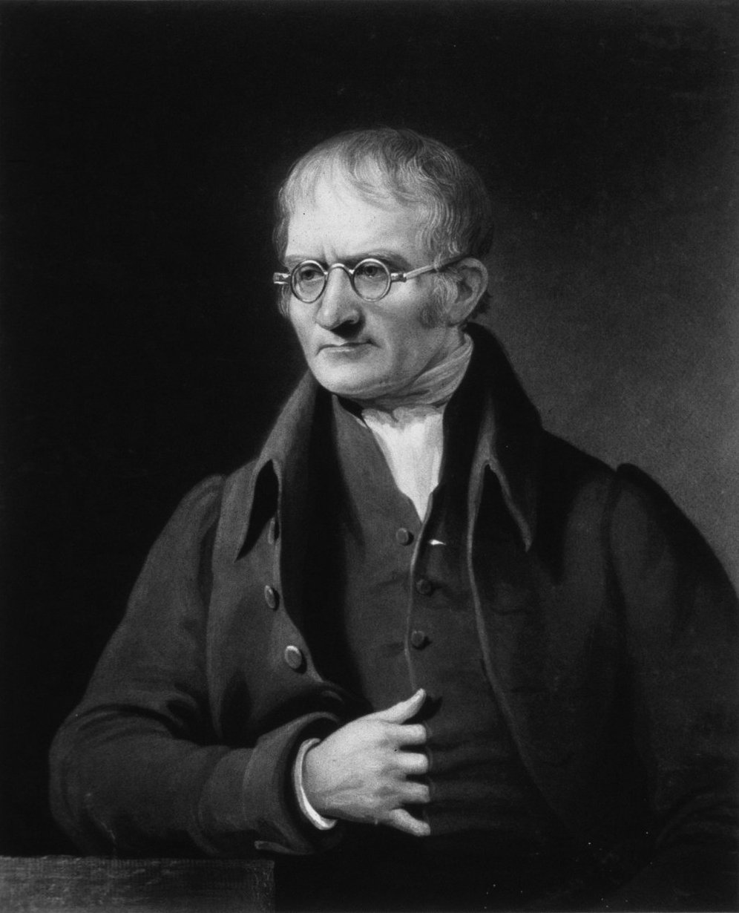
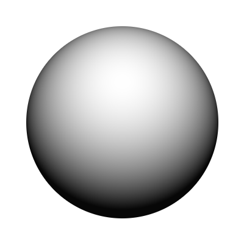

Dalton's Atomic Theory

John Dalton
Golf Ball modelThis is how Dalton described the atom—just like a solid golf ball.
John Dalton was one of the scientists who started the modern story of the atom. You do not have to know much about him, but unfortunately, exam questions do appear from him sometimes. 😭
Dalton proposed 4 main ideas about atoms:
- Atoms are the smallest particles that make up an element.
- Atoms of the same element are identical in mass and size.
- Atoms cannot be created or destroyed.
- Compounds are formed when atoms combine in simple whole-number ratios.
These ideas were rejected as later discoveries proved that these weren't completely correct.